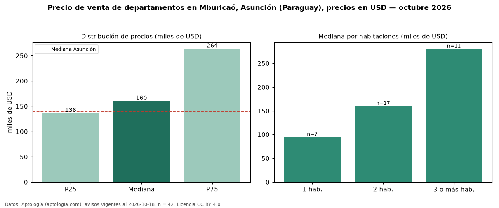

Precio de venta de departamentos en Mburicaó, Asunción (Paraguay), precios en USD — octubre 2026
USD 160.000 es el precio mediano de departamentos en venta en Mburicaó, Asunción (Paraguay) (n = 42 avisos). Frente a la mediana de Asunción para departamentos (USD 140.000), queda 14 % por encima. El segmento con más oferta es el de 2 habitaciones (17 avisos, mediana USD 160.000); pasar de 1 habitación a 3 o más habitaciones cambia la mediana +195 %. La mitad central de los avisos va de USD 136.250 a USD 263.559 (razón 1,9), una dispersión moderada. Por precio mediano es el puesto 7 de 27 barrios de Asunción con al menos 30 avisos de departamentos en venta (USD): en la franja media. Datos: Aptología (aptologia.com), CC BY 4.0 — https://www.aptologia.com/py/venta/asuncion. Archivos: PDF, CSV con las cifras y gráfica PNG.

| Avisos únicos | 42 |
|---|---|
| Percentil 25 | COP 136.250 |
| Mediana | COP 160.000 |
| Percentil 75 | COP 263.559 |
Fuente: avisos vigentes de portales inmobiliarios recopilados por Aptología, deduplicados (mínimo 30 avisos únicos por celda). Precios pedidos, no cerrados. Fecha: 2026-10-18.